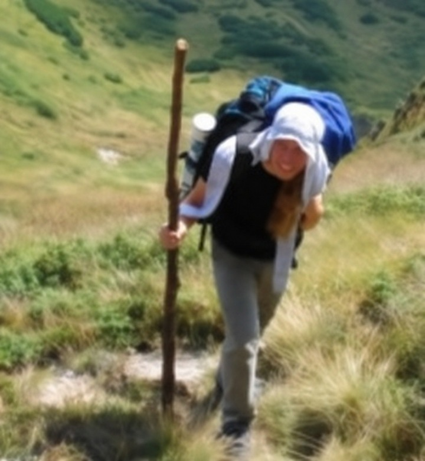
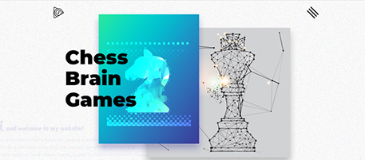

ЖОВ 2021 — ДОТЕПЕРПоточна робота
Розробник застосунків
Oracle East Central Europe ↗Віддалено · офіс в Одесі
Розробка вебзастосунків із JavaScript, React, AngularJS і Ruby. Модульне та наскрізне тестування, робота з Oracle Cloud.
РОЗРОБНИК ВЕБІНТЕРФЕЙСІВ І ЗАСТОСУНКІВ
Я Владислав Косачев. Створюю вебінтерфейси та застосунки з JavaScript, TypeScript, React і Vue.

КОМАНДИ, ДО ЯКИХ Я ДОЛУЧИВСЯ
01 / ДОСВІД
Від фріланс-сайтів до розробки застосунків — з фокусом на frontend.
Віддалено · офіс в Одесі
Розробка вебзастосунків із JavaScript, React, AngularJS і Ruby. Модульне та наскрізне тестування, робота з Oracle Cloud.
Віддалено
Менторство на курсі JavaScript у комп’ютерній школі Hillel.
Чернігів, Україна
Frontend-розробка з JavaScript, TypeScript і Vue.js. Робота з PHP-шаблонами Blade та Twig.
Чернігів, Україна
Верстка на HTML і CSS, веброзробка з JavaScript і Vue.js та інтеграція з WordPress.
Віддалено
Верстка сайтів, розробка з JavaScript і jQuery та інтеграція з CMS: MODX, WordPress і OpenCart.
Фріланс-проєкт: Chess Brain Games02 / ВИБРАНИЙ ПРОЄКТ
Один із ранніх проєктів, що поєднує інтерактивний дизайн і веброзробку.

ФРІЛАНС / ВЕБРОЗРОБКА
Вебзастосунок для розв’язування шахових задач: інтерактивна верстка, анімації, ефекти прокручування й наведення та аудіоплеєр.
Перейти на сайт ↗03 / ІНСТРУМЕНТИ
Основа — JavaScript і TypeScript. Поруч — тестування, API та хмарні інструменти.
JavaScript · TypeScript · HTML · CSS
React · Redux · MobX · Material UI
Vue 2 & 3 · Vuex · Vue Router · Vuetify
AngularJS · Webpack
Патерни проєктування · Модульні тести · E2E-тести
Jest · Karma · Jasmine · Enzyme · AVA · React Testing Library
REST · GraphQL · Google APIs · Firebase
Oracle Cloud · AWS · Docker
Jenkins · CircleCI · Splunk · Grafana · Sentry
Практичні знання Node.js, Express, SSR, MySQL і MongoDB.
Додатковий досвід із PHP (Blade, Twig), Ruby on Rails і базові знання Python. Figma для роботи з дизайном.
04 / ТРОХИ БІЛЬШЕ
Маю магістерський ступінь із психології та досвід менторства для тих, хто вивчає JavaScript.
Мій профіль у LinkedIn ↗ОСВІТА
Чернігівський національний педагогічний університет
2006 — 2011МОВИ
Українська · Російська
Англійська — B2 / intermediate
МАЄТЕ ІДЕЮ ЧИ ПРОПОЗИЦІЮ?